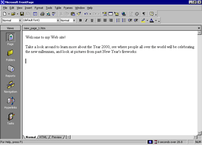
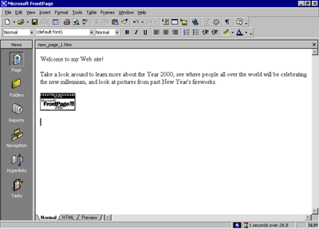
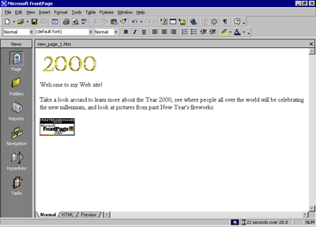

| ||||
For this tutorial, you'll create a Web site with five pages, on which you will tell visitors about the new millennium. Until it is published for the first time, a Web site is a work in progress. If the task of putting together a whole site seems daunting to you, don't worry. You can gradually add information and other pages to your Web site until it is finished. Unlike printed letters, memos, and word-processing documents, Web sites can be dynamically changed or updated even after they've been published. You can add, delete, and modify text, pictures, and entire pages at any time.
With FrontPage, you can get started easily by simply typing text on the blank document that Page view provides. For this lesson, we'll begin with the home page -- the default document that greets your visitors when they surf to your Web site.
To create a home page
The home page is the front door to your Web site. Greeting your visitors as you might do in person and providing some information about the content or subject matter of your site will spark interest in the people looking at your site. The home page also contains links to the other pages in a Web site.
Just like in a word processor, pressing ENTER puts the cursor on a new line.
After typing such a long sentence, you may wonder how much typing you'll need to do before getting to the fun stuff. Don't worry, for most of the Millennium Celebration Web content, we've already done the typing for you. And when you're ready to make your own Web site, FrontPage lets you import any of your existing documents directly onto your Web pages without having to retype anything.
Your page should now look like this:

Next, you will add a picture to the bottom of the current page. Pictures can be scanned photographs, drawings, or computer graphics created in a drawing or image-editing program.
For this example, the picture you'll insert is a graphical button of the FrontPage 2000 Web site logo.
To insert a picture on the home page
FrontPage displays the Picture dialog box. Because you are editing a page that isn't part of a Web site yet, FrontPage also opens the Select File dialog box, which lets you choose a picture to insert from your local file system.
The picture file you'll insert is located in the Tutorial folder that was installed with the FrontPage program files.
In the Tutorial folder, several files will be displayed. By default, FrontPage searches for picture files.
FrontPage inserts the selected picture file on the current page. It is a picture of a button that your site visitors will be able to click to learn more about FrontPage 2000.
Your page should now look like this:

Merely inserting a picture of a button doesn't mean that anything will happen when someone clicks it in a Web browser. To make a picture or a word "clickable," it must have a hyperlink associated with it.
A hyperlink is a pointer from text or from a picture to another page or file on the World Wide Web. On the World Wide Web, hyperlinks are the primary way to navigate between pages and Web sites.
In the next steps, you'll create a hyperlink from the button you just placed on the home page.
To create a hyperlink from a picture
When a picture is selected, it is shown with file handles -- eight small squares around the outline of the picture. These can be used to resize a picture or change its appearance. When a picture is selected, FrontPage also displays the Pictures toolbar below Page view. The Pictures toolbar provides picture editing and formatting tools, which you'll learn about later.
FrontPage displays the Create Hyperlink dialog box. Here, you specify the target of the hyperlink you are creating. This can be a page or a file in your Web site, on your local file system, on a Web server, or on another site on the World Wide Web.
Because you're creating a hyperlink from a button that is labeled "Microsoft FrontPage," you'll link to the Microsoft FrontPage home page on the World Wide Web. When site visitors click the button in a Web browser, they will be taken to the right place.
URL is an acronym for Uniform Resource Locator. It is the technical term for what's commonly known as an "Internet address" or "Web site address." A URL specifies the unique location of a file or a collection of files on the World Wide Web.
You may notice that the appearance of the button itself hasn't changed. Unlike text hyperlinks, which change the color of the clickable text and underline it, picture hyperlinks do not automatically indicate the presence of the hyperlink in an obvious way. This is intentional, because changing the appearance of the picture could obscure the intended page design in some cases.
You can quickly check the existence of a hyperlink from a picture by moving the mouse pointer over the picture. If a hyperlink is present, FrontPage displays the URL the hyperlink points to on the status bar.
Next, you'll insert an animation of the number 2000 at the top of the page. Animated pictures are inserted in the same way as normal pictures.
To insert an animated picture on the home page
The key combination CTRL+HOME places the cursor in the home position -- the top left margin on the current page.
This time, FrontPage immediately displays the contents of the Tutorial folder. For the duration of each work session, FrontPage remembers the names and locations of the folders you've already navigated to.
Double-clicking file names is faster than selecting each file and clicking OK.
FrontPage inserts the animated picture of the number 2000 on the current page. This picture will look great against a dark background, which you'll apply later. While you edit pages in Page view, FrontPage purposely does not show text or picture animations, so they don't distract you from your work. You will be able to see what the animation looks like when you preview the home page later in this lesson.
Your page should now look like this:

To finish the home page, you'll center the text and pictures on it.
To center elements on a page
FrontPage selects everything on the current page.
FrontPage displays the Paragraph dialog box. Here, you can change the alignment of selected elements, and apply indentation and custom spacing for text and graphics.
FrontPage centers the text and the pictures on the home page.
Now that you've invested some time and completed a number of steps, it's a good idea to save your page.
To save the current page
FrontPage displays the Save As dialog box. Here, you can specify the location for the current page, and review or change the page title, the file name, and the file type.
The contents of your My Documents folder is displayed. If no files are displayed in the file list, then you currently do not have any other Web pages stored here.
FrontPage displays the Set Page Title dialog box. Here, the default page title is based on the first line of text on the current page. A title identifies the contents of a page when it is displayed in a Web browser. For this tutorial, you'll change the page title to something more descriptive.
In the Save As dialog box, the default file name is based on the first line of text on the current page. For this tutorial, change the file name to something more descriptive.
FrontPage saves the current page.
Did you find this material useful? Gripes? Compliments? Suggestions for other articles? Write us!
© 1999 Microsoft Corporation. All rights reserved. Terms of use.